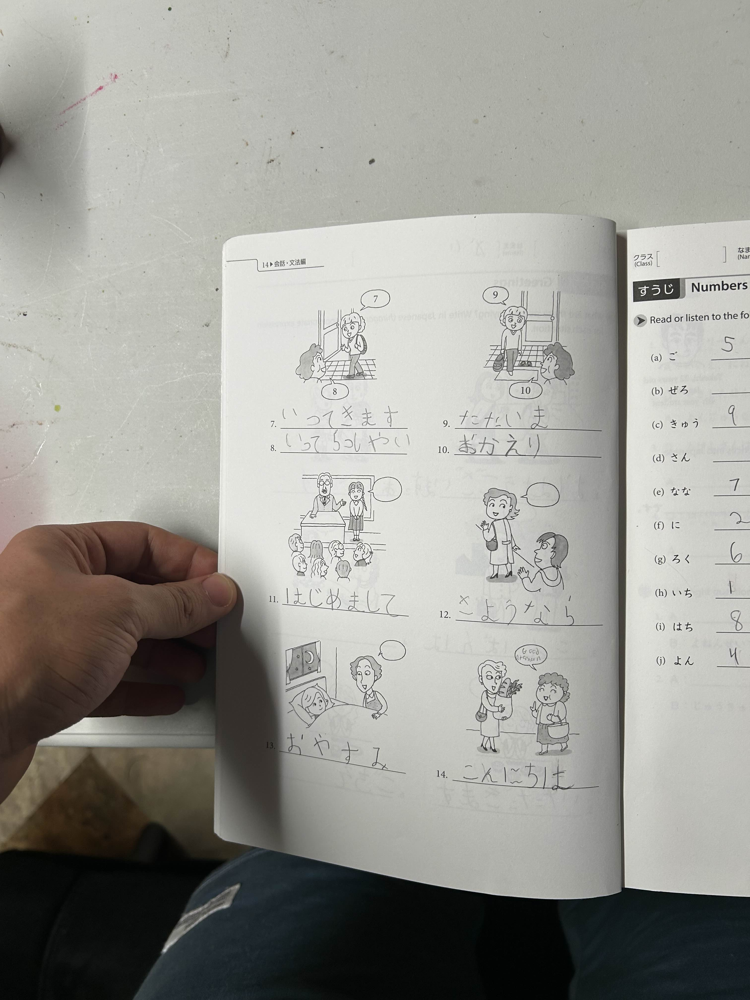

Summer 2022
Learning Japanese
During the summer of 2022, I embarked on the journey of learning Japanese while working as a co-op at GE. Determined to make the most of my time, I dedicated an hour every day after work and additional time over the weekends to study Hiragana and Katakana. This consistent effort became a daily routine, blending seamlessly with my professional responsibilities. The structured approach helped me maintain a balance between work and personal development, enriching my summer with a new linguistic challenge.
To kickstart my learning, I used multiple methods, beginning with the GENKI textbook to get started on my Hiragana. The GENKI series is well-regarded for its comprehensive introduction to Japanese, and it provided a solid foundation for my studies. I diligently worked through the practice workbook, ensuring that I could recognize and write each character. The methodical exercises in the workbook reinforced my learning, making the new script more familiar and less daunting.
To supplement my textbook studies, I used Duolingo to confirm what I had learned from the workbook. The app's interactive exercises and immediate feedback helped solidify my understanding. Additionally, I changed the language settings of the video games I played to Japanese, which significantly enhanced my immersion in the language. This practical application of my skills in a fun context made the learning process more enjoyable and effective.
I proved what I had learned by having weekly conversations with my mentor at GE, who is fluent in Japanese. These conversations started out very simply, focusing on basic greetings and phrases. Over time, we progressed to more complex scenarios and even engaged in some translation practice. These real-life applications of my studies were invaluable, providing both validation and a deeper understanding of the language and culture.
Overall, I'd say the experience was enlightening. Learning a language other than my own, especially one that isn't rooted in Latin, allowed me to immerse myself in a culture vastly different from what I'm used to as a Westerner in Ohio. At this point in time, I'd say I still have Hiragana and some Katakana down. However, Kanji remains a never-ending battle, presenting a continuous challenge in my linguistic journey. The picture below depicts the kind of elementary Hiragana practice I did in the workbook.
